This document describe how to use OpenOffice for writing scientific documents that can be easily converted in the Research Article in Simplified HTML (RASH) format. RASH is a markup language defined as a subset of HTML+RDF for writing scientific articles – its full documentation is available at http://cs.unibo.it/save-sd/rash/documentation/index.html. Note that this section is identified as abstract section because of the particular heading we have used (i.e., all sections having heading either Abstract
or Summary
are intended as abstract sections).
This paper introduces how to use OpenOffice in order to write scientific articles that are easily convertible into RASH, the Research Articles in Simplified HTML format . RASH is a markup language that restricts the use of HTML elements to only 25 elements for writing academic research articles and that allows us to include also RDFa annotations within any element of the language.
The whole conversion approach has been proposed in order to provide authors with a good free and open source word-processor for writing documents such as OpenOffice without caring about the particular HTML tags to use for defining particular blocks of text and metadata. In addition, this is a meta-document (and, thus, a sort of template for scientific documents), since it uses all the admissible functionalities of OpenOffice that still allow one to easily converted it into RASH by using the tools we introduce at the end of the document. This document basically explains how to use OpenOffice default styles and tools for expressing the various elements that form a scientific paper. It is worth mentioning that, in order to have the best conversion into RASH, only the default styles (with no modifications) and the listed tools should be used. In particular, please do not care how the various elements will be shown in the ODT document, since OpenOffice should be used only for writing the content of the paper rather than presenting such content. All the presentational layout of the text will be handled by other external tools after converting the paper into RASH.
The rest of the document is organised as follows. In we explain how to specify the metadata of the article, such as titles, authors, affiliations, keywords and ACM categories. In we introduce all the elements responsible for the definition of the actual text of documents, i.e, paragraphs and inlines. In we present the hierarchical structures for organising the text, e.g., the sections. In we show how to create figures (both inlines and as separate blocks), tables and formulas (both inlines and as separate blocks). In we introduce how to define the bibliographic reference of a paper. In we show how to define footnotes related to a document. In we explain how to create references to all the other objects defined with an article, for instance in-text reference pointers, footnote pointers, etc. Finally, in we present the tools for converting ODT documents into RASH.
Each scholarly article comes with particular metadata that characterise the document, i.e., the title, the authors and (optionally) the keywords and ACM categories of the paper.
We can specify the title of the paper by using the style Title, and the subtitle by using the style Subtitle. The style panel is shown when clicking on the button on the OpenOffice toolbar, or pressing CTRL+T (Win) or CMD+T (Mac). In the Style and Formatting
panel is shown. You can select the new style for the paragraph currently containing the cursor by double clicking on the style name of interest (in the figure, the style Title
is selected). In order to have all the styles available for selection, it is important to choose the All Styles
option from the drop-down menu in the bottom part of the panel.
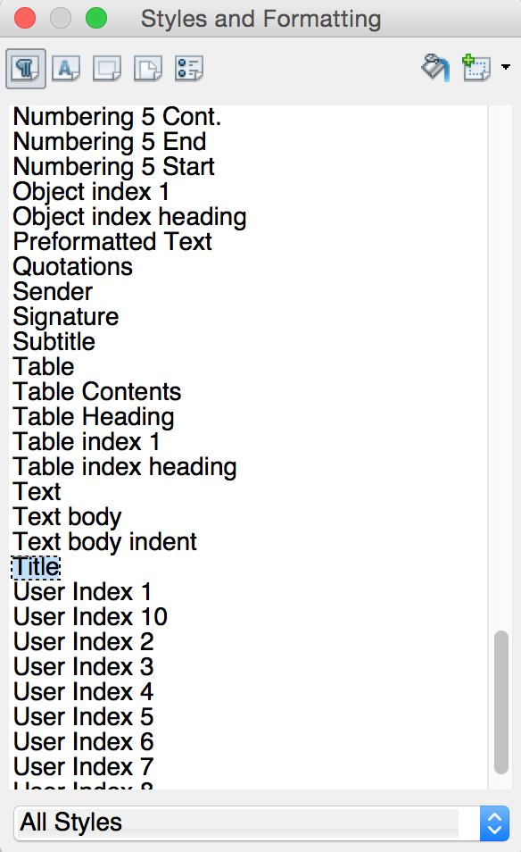
The authors of a document and all their related information (i.e., name, email, and affiliation) can be defined by using a particular user-defined metadata of the document containing a string defining her name, email, and affiliation. In order to do that, one has to open the properties of the current document by clicking on File
and then Properties...
, as shown in .
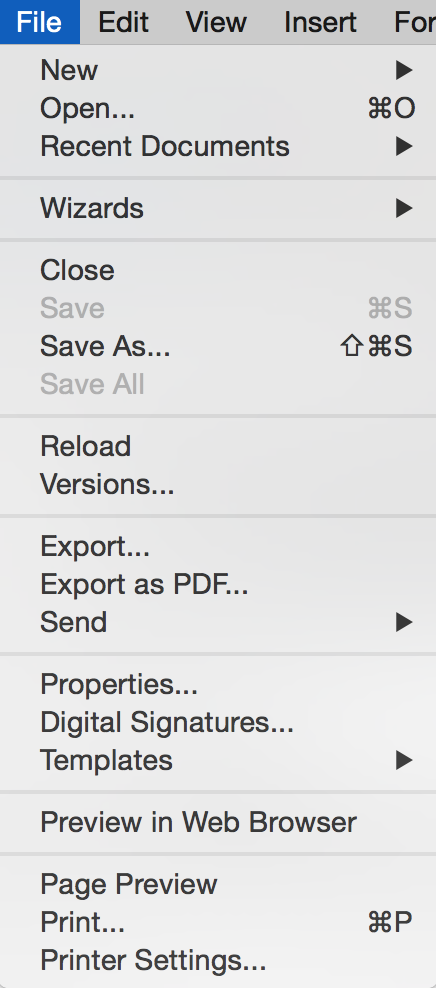
In the Custom Properties
panel, we can add additional metadata to the document by clicking on the button Add
– see . The information about an author must be specified by using the property starting with Author (e.g., Author_1) having type Text, and by specifying a particular string of tokens separated by --
as a value of such property. For instance, for specifying the author Silvio Peroni
having email silvio.peroni@unibo.it
and affiliation Department of Computer Science and Engineering, University of Bologna, Bologna, Italy
, we should use the following string as value of the property:
Silvio Peroni -- silvio.peroni@unibo.it -- Department of Computer Science and Engineering, University of Bologna, Bologna, Italy
Once added all the authors, we can proceed by clicking on OK
. In case more than one authors must be specified, one can simply add additional Author
properties with different indexes, e.g., Author_2, Author_3, Author_4, as shown in .
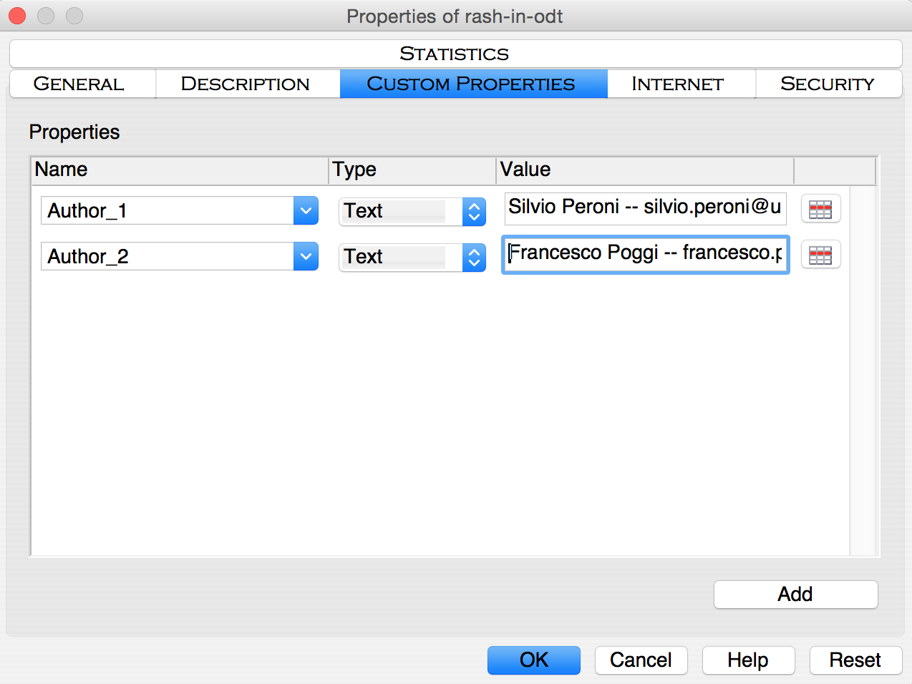
In addition to the aforementioned data, it is possible to use the custom properties to specify other article-related data, such as the ACM subject categories and free text keyword. In particular:
the property Keywords (having type Text) can be used to add keywords related with the article (use --
as separator);
the property Categories (having type Text) can be used to add an ACM subject category related with the article (use --
as separator).
An example of how to create all these information is shown in .
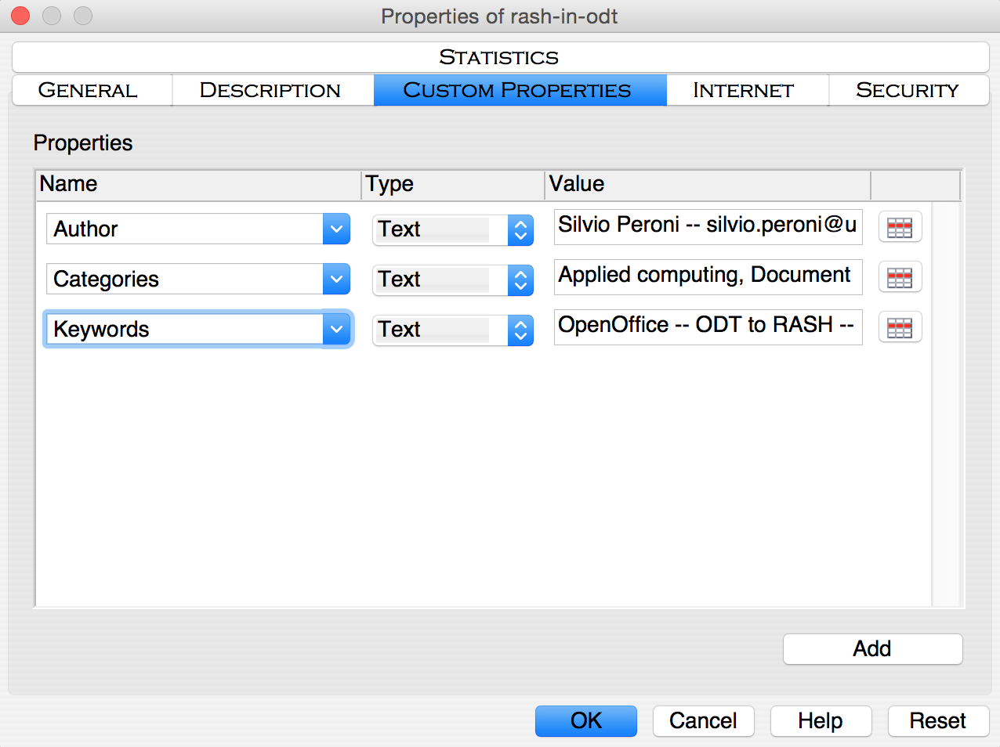
The textual elements for describing the content of the paper can be split in two main categories. On the one hand, there are those that allow us to organise the content of a document in textual blocks, i.e., the paragraphs and other elements containing text. On the other hand, there are elements that allow us to associate particular functions to portions of text, i.e., the inline elements.
First of all, there are the paragraphs, i.e., a self-contained unit of a discourse in writing dealing with a particular point or idea
. A paragraph is the simplest block structure containing text and, among the blocks, the only kind of element in the body where you can use the text.
There exist three different kinds of paragraphs: normal (as this one), paragraphs containing codes and paragraphs with quotes.
The normal paragraphs are defined by means of the standard style Text body, which is usually selected as default by OpenOffice. In addition, even the Default style can be used for defining common paragraphs.
Then we have paragraphs containing source code. They are defined by using the style Preformatted Text available in the Style and Formatting
panel (CTRL+T for Windows users, CMD+T for Apple users), as shown as follows.
This is a paragraph containing codes
This is another one
Finally, it is possible to also describe blocks of quotations by using the style Citation as follows:
This is a quoted paragraph.
The list are self-contained blocks that must be used outside paragraphs and that allow us to structure test as a sequence of item. The buttons 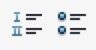 are used to define:
ordered lists (like this one), and
unordered lists (like the following one).
It is possible to include more than one paragraph within each list item as follows:
This is the first item of the list.
This item includes two paragraphs.
This is the second item of the list.
In addition to blocks, it is possible to describe small parts of a text with inline elements defining particular functions on such text, such as emphasis, inline quotation, super- and sub- scripts, and the like.
We can use two different kinds of emphases, the normal one and the strong one, created by using the button (CTRL+I on Windows or CMD+I on Mac) and the button (CTRL+B on Windows or CMD+B on Mac) respectively. Inline quotations, e.g., Alice was beginning to get very tired of sitting by her sister on the bank
, are possible by simply writing the opening and closing quotations. While superscripts and subscripts are defined by selecting the sequence of characters of interest, and then clicking on the appropriate option on the Position
tab in the Character
panel accessible from the menu Format
, as shown in .
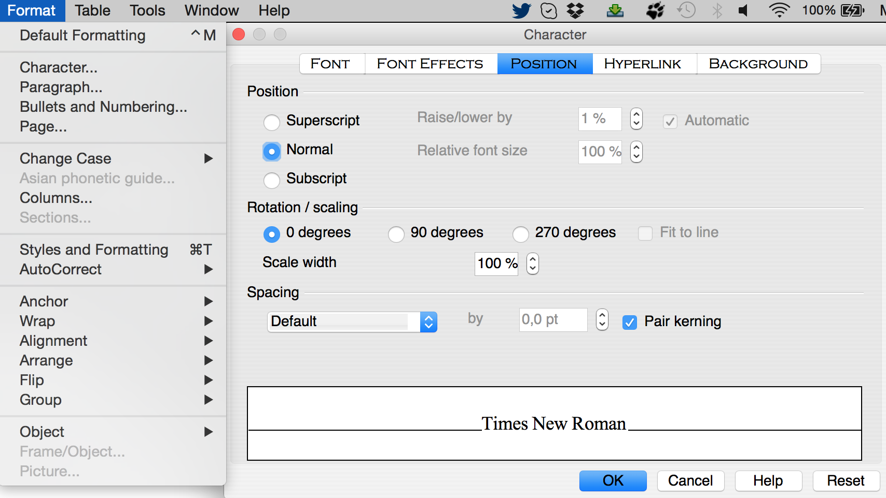
This paragraph contains a simple example of inline code, created by means of the default style for characters Source Text. Alternatively, it is possible to directly use the Courier font style and the Courier New font style for having the same effect.
It is also possible to insert images and formulas as part of the text inside a paragraph. For images, one should click on From file...
available in the option Picture
in the Insert
menu as shown in . In addition, in order to place the image in the right position within a paragraph, it is important to anchor it as a character. This is possible by right-clicking on the image and then selecting the option As Character
in the menu Anchor
, as shown in .
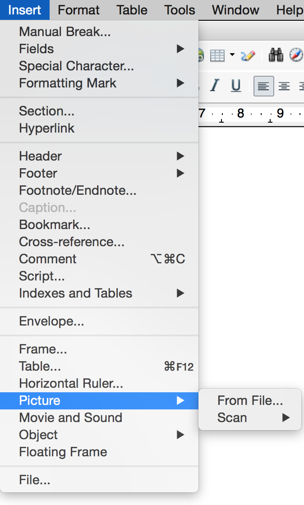
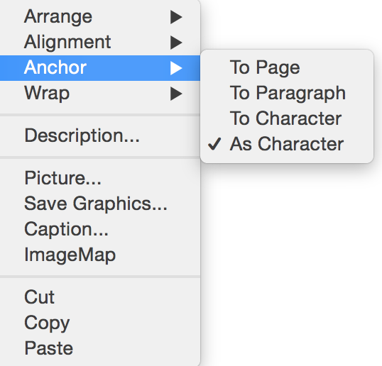
For formulas, one should access the Object
option in the Insert
menu, and then clicking on Formula
(see ). Now one can use the panel for mathematical formulas in order to create the formula such as , as shown in .
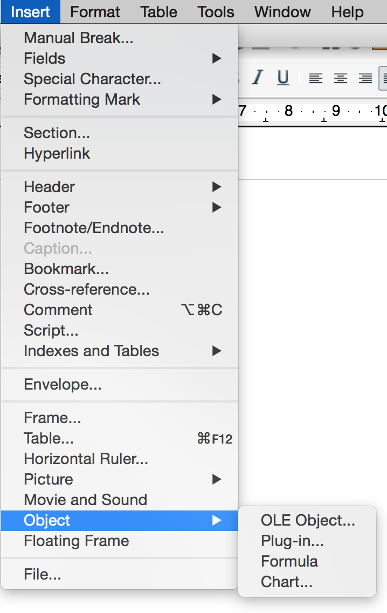
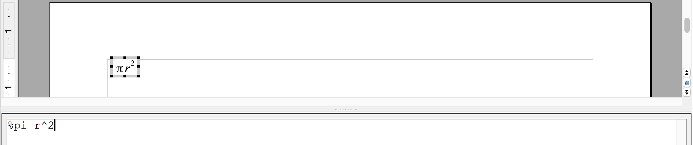
Finally, the hyperlinks can be created by clicking on the button and by specifying the target URL, the content of the link through the appropriate panel, as shown in .
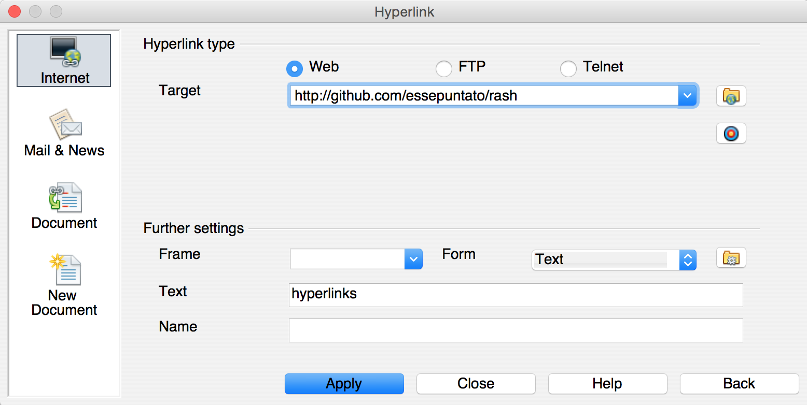
Sections are pure structural constructs that allow one to organise the various textual blocks of a document according to appropriate hierarchies. In OpenOffice, any new section is implicitly defined by specifying a new heading by means of the appropriate style: Heading 1, Heading 2 and Heading 3.
The sequence of headings of different importance implicitly describes the organisation into sections and subsections of the document. Thus, main sections will be added by means of the style Heading 1, subsections of those ones will be created by using the style Heading 2, and sub-subsections of the latter ones will be created by using the style Heading 3.
In a scientific article, figures, tables and formulas as usually contained within appropriate blocks accompanied by a caption that allow one to refer to such items easily within the text. In OpenOffice, all these boxes are defined easily by inserting the object of interest and then by associating a caption to it.
We can define a figure box containing an image with a caption by adding a new picture in an empty paragraphs (as introduced in ) and then by right-clicking on the added picture and selecting the field Caption...
, as shown in .
Then one can simply add the text of the caption by using the panel Caption
shown in .
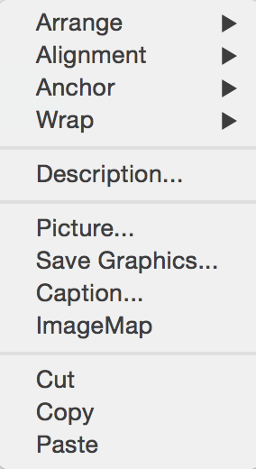
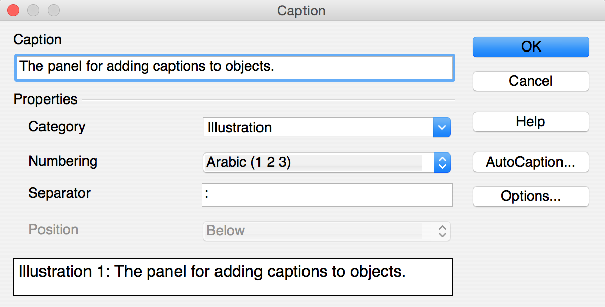
We can define a table box containing a table with a caption by clicking on the button when the cursor is on an empty paragraph and then selecting how many rows and columns are needed for the table. The caption can be added by right-clicking on the added table and selecting the field Caption...
, as also shown for figures in .
As shown in , table cells can have associated basically two different styles. In particular, all the table cells are initialised with the style Table Contents associated. In order to set some cells as heading cells of the table, one should change their style in Table Heading.
| Types of cells | Style associated |
|---|---|
|
Heading cell |
Table Heading |
|
Content cell |
Table Contents |
We can define a listing box containing text with a caption by adding a new frame in an empty paragraphs as shown in . Then the caption can be added by right-clicking on the added frame and selecting the field Caption...
, similar to what has been shown in .
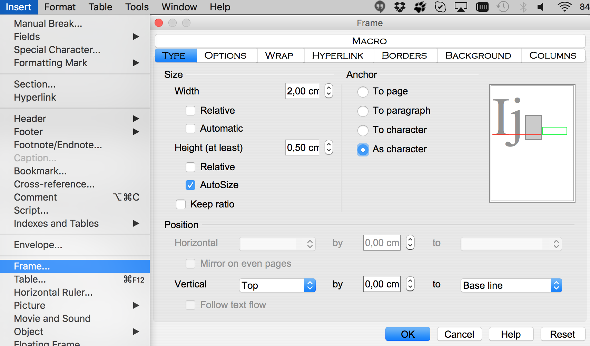
As shown in , the content of the frame should be only textual, it is possible to use multiple paragraph and does not matter what particular style for the paragraph one want to use. However, as a sort of guideline, we strongly suggest to use the Preformatted Text available in the Style and Formatting
panel (CTRL+T for Windows users, CMD+T for Apple users) as also shown in .
This is a paragraph to put in listings.
It is not important which font you use here, even if it is common to use the Preformatted Text style.
We can define a formula box (useful for allowing formulas to be referenced within the text) containing a formula with an empty caption by adding a new formula in an empty paragraphs (as introduced in ) and then by right-clicking on the added formula and selecting the field Caption...
as shown for figures in without specifying any text associated.
For instance the formula introduced in can be expressed in a formula box as shown in .
It is worth mentioning that OpenOffice describes captions of formulas as they are common pictures. However, the translation of the document into RASH (briefly introduced in ) will be able to understand the difference, and it will put formulas in the appropriate boxes.
All the references are organised in an ordered list within a special section defined by the actual content of the heading of such section. In particular all sections having heading either References
or Bibliography
are intended as reference sections.
This special section must have an heading and only one ordered list containing the full text of a bibliographic reference for each list item. Usually, it is the last section of the document. It is worth mentioning that the user can avoid to take care of the order the various references are listed in the reference list, since they will be reordered automatically in the RASH document obtained from the conversion of the original ODT document.
All the footnotes like can be defined by opening the menu Insert
, selecting the option Footnote/Endnote...
, and then clicking on the button OK
in the footnote/endnote panel shown in , taking care that the type selected is Footnote
.
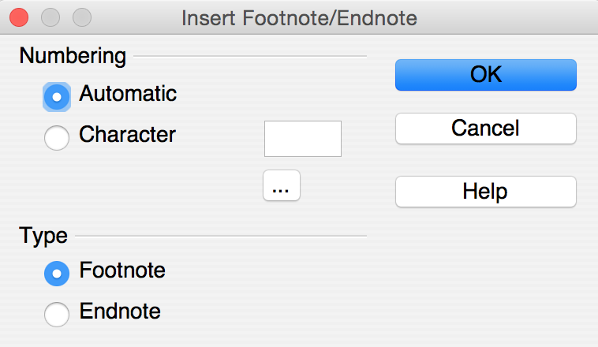
All the sections (e.g., ), figures (e.g., ), tables (e.g., ), listings (e.g., ), formulas (e.g., ), bibliographic references (e.g., ), footnotes (e.g., ) can be referenced within the text by using the OpenOffice cross-reference tool available by selecting the menu Insert
and then clicking on Cross-reference...
. The panel that will be opened (shown in ), allows us to specify to what particular object we want to refer to (section Type
), which object of the selected type should be referenced (section Selection
), and which referencing style should be used within the document (section Insert reference to
).
While different option for including referencing in the document are possible, we suggest to use specific referencing style according to the object that is referenced. Our suggestion are described in – of course the user can choose to adopt the preferred referencing style that differs with our suggestions.
| Object | Type | Referencing style |
|---|---|---|
|
Section |
Headings |
Reference |
|
Figure |
Illustration |
Category and Number |
|
Table |
Table |
Category and Number |
|
Listing |
Text |
Category and Number |
|
Formula |
Illustration |
Category and Number |
|
Bibliographic reference |
Numbered Paragraphs |
Number (full context) |
|
Footnote |
Footnote |
Reference |
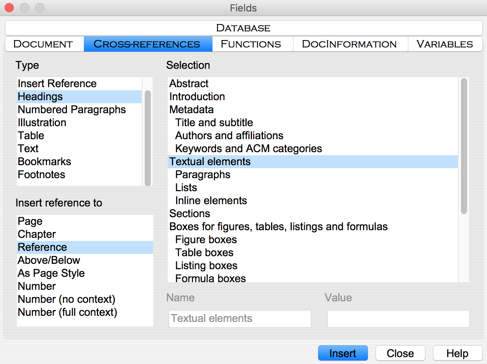
The conversion of ODT documents, such as this one, into RASH is implemented by using a particular XSLT 2.0 document we developed for that purpose. The XSLT file is available online at http://github.com/essepuntato/rash/xslt/from-odt.xsl. In addition, we have also released a simple Java application, downloadable at http://github.com/essepuntato/rash/tools/odt2rash called ODT2RASH, that includes such XSLT file and that allows one to automatically convert an ODT document into RASH. To run the application you need to run the following command:
java -jar odt2rash.jar -i <input-odt-file> -o <new-output-directory>
The acknowledgements of a document are organised in a special section defined by the actual content of the heading of such section. In particular all sections having heading either Acknowledgement
or Acknowledgements
are intended as acknowledgements sections. Acknowledgements are usually put just after the section concluding the document (i.e., in this case) and before the reference section.
Wikipedia entry Paragraph
. https://en.wikipedia.org/wiki/Paragraph (last visited, October 30, 2015).
Peroni, S. (2015). RASH: Research Articles in Simplified HTML – Documentation. Version 0.4, October 22, 2015. https://rawgit.com/essepuntato/rash/master/documentation/index.html
This is the first footnote of the document.